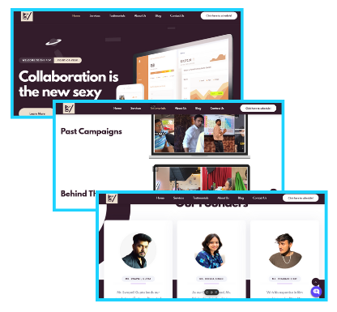
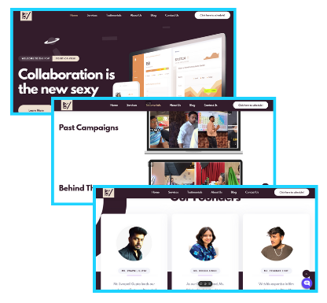

Here’s a 9-Minute Video Showcasing Why I’m the Right Fit for Classplus's Team:
Why Me?
/1.png)
Website Development & Design Proficiency

Automation & Funnel Optimization

Collaborative Mindset & Continuous Learning
About Me

Over the past few years, I have transitioned into the world of frontend development, building clean, responsive websites and interactive user experiences. I specialize in developing visually appealing websites and landing pages that are both functional and user-friendly.
With a strong focus on performance, usability, and design, I am committed to delivering web solutions that leave a lasting impression.
Past Work

 

I might just be the intern you’ve been searching for — especially if you’re building at Classplus.
üëã I'm a Frontend Developer passionate about crafting fast, clean, and conversion-focused websites. More than just writing code, I focus on structuring scalable interfaces that enhance user journeys ‚Äî something that directly impacts your educators and learners.
At my core, I care about:
✅ Scalability – Thinking ahead, not just solving what’s right in front. I build components that adapt as your platform grows.
✅ Optimization – Pages that load fast, feel smooth, and retain users — vital in a competitive EdTech environment.
✅ Ownership – Every project I touch, I treat as my own product — a mindset that fits right into Classplus’ “founder-like” culture.
✅ Collaboration – I believe in continuous iteration through feedback. I build in loops, not in silos.
With a strong blend of frontend logic and user-first design, I create experiences that are visually compelling and built to last — especially in a platform like Classplus, where performance, reliability, and experience directly influence outcomes.
Because you don’t need another “just-do-it” intern.
You need someone who thinks, builds, refines, and scales — someone who codes with clarity and purpose.
At Classplus, you call it building for Bharat.
I call it being a...
üéØ Frontend Architect.
Let’s connect and explore how I can contribute to the kind of intuitive, impactful, and scalable products Classplus is building for the next million educators.